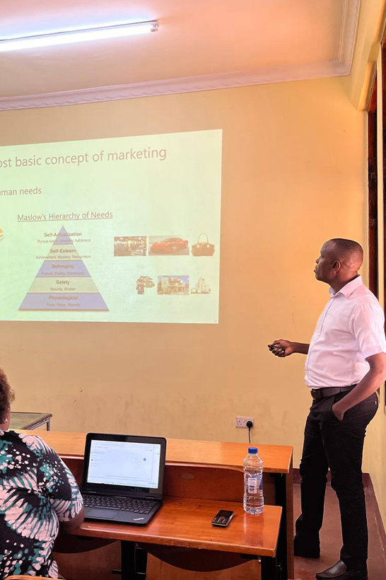

About BDS Tanzania
A National Professional Body Strengthening
Business Development Services in Tanzania.
Professional Association of BDS Providers
BDS Tanzania unites consultants, trainers, business coaches, enterprise facilitators, entrepreneurship promoters, finance-readiness advisors, project managers and all professionals engaged in business development service delivery across Tanzania.
Standards and Knowledge Platform
We promote professional standards, ethical conduct, practitioner competency development and knowledge generation to improve the quality, visibility and credibility of business development practice — making Tanzania's BDSP community more effective and trusted.
Enterprise Growth and Empowerment Partner
We connect professional BDS expertise to MSMEs, cooperatives, women-led businesses, youth enterprises and economic empowerment programs — supporting business formalization, finance readiness, market development and enterprise competitiveness across all seven zones.

National professional association
Headquartered in Dodoma, United Republic of Tanzania, BDS Tanzania exists to professionalize, coordinate and deploy competent BDS providers in service of Tanzania's inclusive economic growth agenda.
A Professional Home for Credible BDS Practice in Tanzania.
The Business Development Society of Tanzania was established to unite, professionalize and coordinate business development service providers across Tanzania. The Society responds to a real and documented enterprise support gap: thousands of Tanzanian MSMEs, cooperatives and entrepreneurs require accessible, credible and practical advisory support in business planning, formalization, governance, market readiness, digitalization and sustainable growth management — yet the profession that delivers that support has historically lacked structure, standards and a national institutional voice.
BDS Tanzania therefore occupies a dual institutional position. As a membership body, it provides a professional home where business development practitioners can grow, connect, be recognized and contribute to the sector. As a technical platform, it drives the professional standards, capacity building systems, knowledge products and coordinated program delivery that make the BDS ecosystem in Tanzania more effective, accountable and impactful. The Society operates through a national Secretariat supported by seven zonal offices — Eastern, Northern, Lake, Western, Central, Southern Highlands and Southern Zones — ensuring national reach with local relevance.
- Promotes professional standards, ethics and practical relevance across the BDS profession in Tanzania.
- Supports MSMEs, cooperatives, entrepreneurs and economic empowerment actors through quality business development practice.
- Creates value for members, partners and stakeholders through collaboration, continuous learning and structured programme delivery.
- Advocates for enabling policy, institutional recognition and greater investment in quality business development services.


Our Vision, Mission and Long-Term Institutional Goal.
A Nationally Recognized and Trusted Professional Body
A nationally recognized, professionally credible and impactful association of business development service providers, driving enterprise growth, professional excellence and economic transformation across Tanzania.
To Professionalize and Deploy Quality BDS Across Tanzania
To unite, strengthen and elevate business development service providers in Tanzania through professional standards, practitioner capacity development, institutional advocacy, knowledge generation and strategic partnerships — in service of MSMEs, entrepreneurs and inclusive economic empowerment.
To Expand Access and Strengthen National Impact
By 2030, BDS Tanzania aims to be an effective, well-resourced and institutionally respected national platform that expands access to quality business development services, strengthens professional practice, supports MSME competitiveness and contributes measurably to Tanzania's inclusive economic empowerment and enterprise development agenda.
The Principles That Guide How We Serve.
BDS Tanzania is committed to professional conduct, practical relevance, inclusion and institutional accountability. These values shape how we engage members, enterprises, institutional partners and the wider business development ecosystem.
Professionalism
We uphold competence, quality, continuous improvement and consistent excellence in all aspects of business development service delivery — holding our members and the Society itself to the highest professional standards.
Integrity
We promote ethical conduct, transparency, trust and responsible professional practice as non-negotiable foundations of credible business development work and institutional governance.
Service
We focus on practical relevance — solutions that respond to real enterprise needs, real market conditions and the real capacity constraints faced by MSMEs, cooperatives and entrepreneurs across Tanzania.
Inclusion
We support equitable opportunity and actively broaden participation for women-led businesses, youth enterprises, rural practitioners and diverse professional and community groups across all zones.
Collaboration
We believe that partnerships between practitioners, institutions, development partners and government strengthen program delivery, knowledge exchange and national development impact.
Continuous Learning
We value innovation, evidence use, reflective practice and continuous professional development as essential drivers of a high-quality, adaptive and future-ready BDS profession.
How BDS Tanzania Positions Itself in the Enterprise Development Ecosystem
BDS Tanzania occupies three mutually reinforcing institutional roles that allow the profession to contribute more effectively to enterprise development, MSME competitiveness and inclusive economic empowerment in Tanzania.
- As a national professional body for consultants, trainers, coaches, enterprise facilitators, project managers, entrepreneurship promoters and finance-readiness advisors.
- As a standards and knowledge platform focused on business formalization, regulatory compliance, financial readiness, market development, value chain integration, enterprise governance, mentoring and training.
- As a value-adding institution through competency frameworks, structured capacity building, coordinated program delivery, evidence-based knowledge products and institutional advocacy across all seven zones.
- Because stronger BDS systems build enterprise readiness, widen access to markets and finance, reduce business failure rates and contribute to Tanzania's inclusive economic growth, job creation and national development agenda.
Who We Serve
Consultants, trainers, coaches, enterprise facilitators, project managers, entrepreneurship promoters and finance-readiness advisors — as well as MSMEs, cooperatives, local economic groups, development programmes and institutions seeking quality business support.
What We Focus On
Business formalization and regulatory compliance, financial readiness and access to finance, market development and value chain integration, enterprise governance, productivity improvement, mentoring, training and MSME competitiveness.
How We Add Value
Through professional standards and competency frameworks, structured capacity building, coordinated program delivery, evidence-based knowledge products, institutional advocacy and visible promotion of quality BDS practice across all seven zones.
Why It Matters
Stronger BDS systems build enterprise readiness, support formal economic participation, widen access to markets and finance, reduce business failure rates and contribute to Tanzania's inclusive economic growth, job creation and national development agenda.
Five Strategic Pillars Guiding BDS Tanzania's Institutional Growth to 2030.
Institutional Strengthening, Governance and Financial Sustainability
Build a professionally governed, adequately resourced and financially resilient national association capable of coordinating programme delivery across all seven zones, managing institutional partnerships, maintaining quality assurance and producing credible, transparent performance accountability.
- Strengthen governance systems, operational discipline and internal accountability across all institutional levels.
- Improve institutional functionality through capable staff, documented procedures and financial management standards.
- Develop sustainable resource mobilization strategies including membership revenue, service income, grants and institutional partnerships.
Membership Growth, Zonal Reach and Professional Engagement
Grow and retain a committed and diverse membership base, deepen zonal participation across all seven zones and position BDS Tanzania as the preferred, credible professional home for business development service providers across Tanzania.
- Recruit and retain full professional members, associate members and institutional members across all geographic zones.
- Strengthen professional identity, peer learning networks and the visibility of BDS Tanzania among practitioners and stakeholders.
- Use zonal coordination structures to expand local engagement, programming and partnership development.
Professional Standards, Accreditation and Knowledge Systems
Establish BDS Tanzania as the national reference body for professional competency standards, ethical practice, structured learning pathways, practitioner certification and knowledge generation in the business development field.
- Develop and promote professional competency frameworks, standards and ethics codes for business development practice in Tanzania.
- Support practitioner mapping, member registry development and pathways toward professional certification and recognition.
- Generate practical knowledge products including publications, case studies, toolkits and research outputs relevant to BDS and enterprise development.
Program Delivery, Business Formalization and MSME Competitiveness
Demonstrate the practical value of organized BDS through structured program delivery that improves enterprise capability, promotes business formalization, strengthens MSME competitiveness and expands access to markets, finance and economic opportunities.
- Support business formalization, compliance readiness and access to regulatory frameworks for MSMEs and cooperatives.
- Advance inclusive enterprise support for women-led businesses, youth enterprises and economic empowerment groups.
- Improve enterprise financial readiness, market readiness and strategic capacity through quality advisory and training programs.
Advocacy, Partnerships, Communication and Policy Influence
Position BDS Tanzania as a credible national voice of the business development profession and a trusted institutional partner in enterprise development, MSME policy dialogue, donor-funded programming and professional recognition frameworks.
- Strengthen and formalize partnerships with government bodies, development finance institutions, private sector entities and international professional associations.
- Promote the role, value and impact of quality professional BDS in Tanzania through communication, publication and stakeholder engagement.
- Contribute evidence, practitioner insights and sector data to national policy dialogue, enterprise development programming and professional regulation.
Need clarity about BDS Tanzania?
Here are some of the key questions stakeholders, members and potential partners commonly ask about BDS Tanzania and its role in the enterprise support ecosystem.
BDS Tanzania — the Business Development Society of Tanzania — is a voluntary, non-governmental professional association established to unite and professionalize business development service providers across Tanzania. It was founded to address persistent gaps in professional standards, institutional coordination and the quality of enterprise support available to MSMEs, cooperatives and entrepreneurs.
Membership is open to full professional members (consultants, trainers, coaches, facilitators, project managers, entrepreneurship promoters and related practitioners), associate members (those in training or dedicated business persons), institutional members (firms, NGOs and organizations aligned with BDS objectives) and honorary members recognized for exceptional contributions.
Key areas include business advisory support, capacity building, SME development, professional standards, practitioner certification, business formalization, financial readiness, market development, enterprise governance, mentoring, research and knowledge generation, advocacy and institutional partnerships.
BDS Tanzania is governed through five institutional levels: the General Assembly (supreme authority), the Executive Committee, the national Secretariat, seven Zonal Offices (Eastern, Northern, Lake, Western, Central, Southern Highlands and Southern), and Working Committees covering ethics, finance, programs, research and membership.
You can register directly through the website, email the Secretariat at info@bdst.or.tz or call 0655-211777. The Society welcomes professionals, institutions and partners committed to quality business development services and enterprise growth in Tanzania.